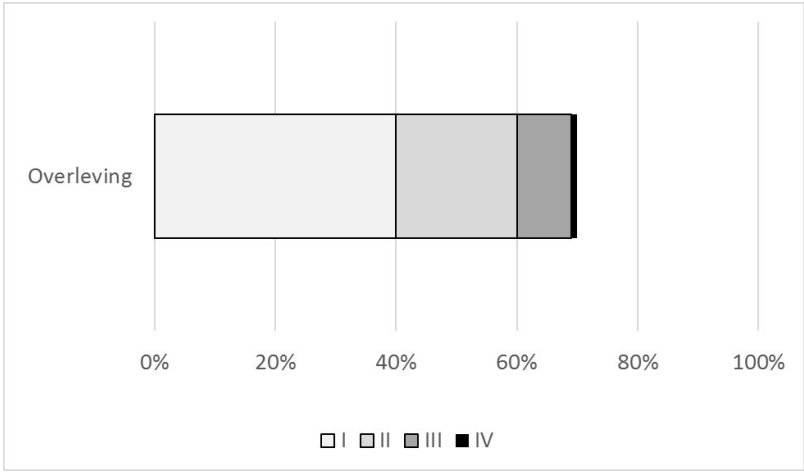

Vraag 1
Je bent chirurg. Je gaat een patiënt opereren en je weet nu al: er is zeker transfusie nodig bij deze operatie.
Bij welke van onderstaande ziekten geef je bij voorkeur geen transfusie?
Vraag 2
Bij welke ziekte kan een diepe pancytopenie met ook zeer lage
aantallen leukocyten in het bloed passen?
Vraag 3
Pathofysiologie van hemoglobinopathie. Kies de juiste opties in de pull-down menu's.
| Sikkelcelanemie | |||
| Beta-thalassemie | |||
| Alfa-thalassemie |
Vraag 4
Welke van onderstaande beweringen is NIET juist.
Vraag 5
Een 21-jarige man van Liberiaanse afkomst meldt zich op de SEH met kortademigheid, koorts, pijn in de rug en op de borst. Het Hb is 4.6 mmol/l, reticulocyten verhoogd, LDH verhoogd, haptoglobine verlaagd. Trombocyten en leucocyten zijn normaal.
Wat is de meest waarschijnlijke diagnose?
Vraag 6
Uw patiënt van 60 jaar waarbij net een bloedtransfusie is gestart, krijgt last van pijn in de rug, hypotensie en koorts en voelt zich erg onwel.
Wat is hier meest waarschijnlijk aan de hand?
Vraag 7
Sleep de laboratoriumuitslagen naar de juiste ziekten. Iedere ziekte kan maar één maal gecombineerd worden met een laboratoriumuitslag. Er is maar één juiste combinatie van vier laboratoriumuitslagen en ziektes mogelijk.
Sleep een optie naar de bijbehorende rij, of tik eerst op een kaart en dan op een rij.
chronische myeloide leukemie
Sleep hier naartoe
polycytemia vera
Sleep hier naartoe
acute lymfatische leukemie
Sleep hier naartoe
auto-immuun hemolytische anemie
Sleep hier naartoe
Vraag 8
Een 54-jarige man ontwikkelt een anemie na behandeling met rasburicase voor een non-Hodgkin lymfoom. Zijn grootouders komen uit Curacao. Het laboratoriumonderzoek laat de volgende uitslagen zien: Hb 4.1 mmol/l, bilirubine verhoogd, haptoglobine verlaagd, LDH verhoogd.
Wat is de meest waarschijnlijke diagnose?
Vraag 9
Welke bevindingen kunnen worden aangetoond met welk type onderzoek? Er is maar één beste combinatie. Sleep het onderzoek naar de juiste bevinding.
Sleep een optie naar de bijbehorende rij, of tik eerst op een kaart en dan op een rij.
PML RARa mutatie
Sleep hier naartoe
t(8:21)
Sleep hier naartoe
AML of ALL
Sleep hier naartoe
sikkelcellen
Sleep hier naartoe
Vraag 10
Een 20-jarige man presenteert zich bij de huisarts met een pijnloze zwelling in de hals die er al maanden zit maar die niet weggaat en steeds een beetje groter wordt. Hij heeft geen andere klachten.
Wat is de meest waarschijnlijke diagnose?
Vraag 11
Een 40-jarige man wordt gediagnosticeerd met een folliculair lymfoom. Hij heeft klieren in de oksel en in de hals, en verder in het geheel geen klachten.
Welk stadium heeft hij?
Vraag 12
Welke van onderstaande medicijnen wordt gebruikt in de
behandeling voor patiënten met een chronische myeloide leukemie?
Vraag 13
Een 30-jarige vrouw komt met moeheid bij de huisarts. Omdat hij haar nog zelden heeft gezien laat hij laboratoriumonderzoek verrichten. Zij heeft leucocyten van 40 × 109/l, trombocyten van 20 × 109/l, en een Hb van 5,1 mmol/l. Haar neutrofiele granulocyten zijn 0,2 × 109/l.
Welke stelling is waar?
Vraag 14
Welke mutatie wordt bij patiënten met een polycytemia vera
gevonden?
Vraag 15
Een 80-jarige vrouw heeft de laatste weken veel pijn in de rug. Een foto toont een wervelinzakking op L3 maar ook lytische lesies in andere wervels. Zij blijkt een paraproteine (IgG lambda) te hebben. Beenmergonderzoek toont een lambda-monoclonale plasmocytose van 70%.
Wat is de diagnose en beste beleid?
Vraag 16
Een 65-jarige man vertelt op een borrel dat hij blij is dat hij er weer bij kan zijn. Hij heeft een stamceltransplantatie gehad voor een acute leukemie. Hij moest lang erg oppassen tot de afweer weer goed genoeg was, en de donorcellen voldoende werkten.
Wat voor transplantatie zal hij gehad hebben?
Vraag 17
In de hemato-oncologie worden indolente lymfomen onderscheiden van agressieve lymfomen.
Welk van de volgende beweringen over indolente lymfomen is juist?
Vraag 18
U wordt gebeld door een huisarts over een patiente van 80 jaar waarbij hij een leukemie vermoedt. Zij heeft 88 × 109/l leuco’s (in de differentiatie voldoende neutrofiele granulocyten en 66 × 109/l lymfocyten), normale trombocyten en normaal Hb.
Wat vertelt u de huisarts?
Vraag 19
Bij een patiënt is de diagnose multipel myeloom gesteld.
Welke vier bepalingen/onderzoeken moeten plaatsvinden om te beoordelen of behandeling gestart moet worden?
Meerdere antwoorden mogelijk.
Vraag 20
Een 75-jarige man met de ziekte van Waldenström presenteert zich bij de huisarts in verband met wazig zien en traag denken. Hij is net de hele winter in Spanje geweest om te overwinteren en heeft toen zich niet laten controleren.
Wat is de meest waarschijnlijke oorzaak van zijn klachten?
Vraag 21
Bij acute myeloide leukemie betekent een t(15:17) een betere
prognose.
Vraag 22
Stelling: De kans op coronarialijden na thoracale bestraling voor
Hodgkin lymfoom is verhoogd.
Vraag 23
Waarom nemen we iemand die we met chemotherapie behandelen
voor een acute leukemie op, en geven we voor non-Hodgkin lymfoom de chemotherapie meestal
poliklinisch?
Vraag 24
Sleep de behandeling naar de juiste bloedwaarde.
Sleep een optie naar de bijbehorende rij, of tik eerst op een kaart en dan op een rij.
Hb van 14,6 mmol/l
Sleep hier naartoe
Leucocyten van 0,1 × 109/l
Sleep hier naartoe
IgM van 40 g/l (nl tot 2,3g/l)
Sleep hier naartoe
Hb van 3 mmol/l met verhoogde reticulocyten
Sleep hier naartoe
Vraag 25
Een man van 71 jaar heeft een refractair agressief non-Hodgkin lymfoom. Hij zou hiervoor een autologe stamceltransplantatie na hoge dosis chemotherapie moeten ondergaan, maar dat wordt eigenlijk niet boven de 70 jaar gedaan.
Wat is de juiste handelwijze?
Vraag 26
Welke twee van onderstaande ziekten zijn maligne?
Meerdere antwoorden mogelijk.
Vraag 27
Prostaatcarcinoom wordt gegradeerd volgens het Gleason systeem. De graad wordt weergeven door een getal tussen 2 en 10.
Wat is de betekenis van een hogere Gleason graad? Een tumor met een hogere Gleason graad...
Vraag 28
Bij het ontstaan van sommige tumortypes speelt het humaan papilloma virus (HPV) een belangrijke rol.
Bij welk van de volgende tumortypes speelt HPV een rol?
Vraag 29
Welke van de volgende kenmerken van een tumor spelen een rol bij
bepalen van het tumor stadium?
Vraag 30
Een maligne tumor die ontstaat uit vetweefsel heet:
Vraag 31
Diverse oorzaken kunnen bijdragen aan het ontstaan van kanker. Sleep de mogelijke oorzaak naar het type kanker wat ermee is geassocieerd.
Sleep een optie naar de bijbehorende rij, of tik eerst op een kaart en dan op een rij.
Ovariumcarcinoom
Sleep hier naartoe
Urotheelcelcarcinoom
Sleep hier naartoe
Melanoom
Sleep hier naartoe
Mesothelioom
Sleep hier naartoe
Vraag 32
Mutaties in het RAS gen komen in ongeveer 30% van de menselijke tumoren voor.
Wat is de functie van RAS?
Vraag 33
Wat is het onderliggende mechanisme van tumorvorming bij
patiënten met (Hereditary Nonpolyposis Colorectal Cancer) HNPCC?
Vraag 34
Wat is het doel van adjuvante therapie bij darmkanker?
Vraag 35
Een 52-jarige patiënt heeft een coloncarcinoom in het coecum, zonder uitzaaiingen op afstand. U besluit een gedeelte van de dikke darm te verwijderen.
Welke bewering is juist?
Vraag 36
Welke van onderstaande stellingen is juist?
Vraag 37
Hoofd-halstumoren vormen:
Vraag 38
Wat is een belangrijk verschil tussen hormonale behandeling en
chemotherapie?
Vraag 39
Een 62-jarige vrouw wordt vanwege mammacarcinoom behandeld met anthracyclines.
Een beruchte late bijwerking van anthracyclines is:
Vraag 40
Bij een 55-jarige vrouw met borstkanker zonder metastasen op afstand is onlangs een borstamputatie verricht. Het PA-verslag luidt: overwegend ductaaltype adenocarcinoom van de mamma, multifocaal (2 separate nodi met een diameter van respectievelijk 3,7 en 3,5 cm), radicaal verwijderd. Graad 3. Progesteronreceptor positief, oestrogeenreceptor positief, Her2/Neu: positief. De okseltop lymfklieren zijn tumorpositief, terwijl ook de overige lymfklieren (N=7) allemaal tumorweefsel bevatten, waarvan sommige met kapseldoorbraak.
Waaruit kan je opmaken in het verslag dat de kans dat de tumor terug komt (recidief) relatief hoog is?
Vraag 41
Wat is de eerste keus behandeling van acute myelumcompressie ten
gevolge van metastasen?
Vraag 42
Het plaveiselcelcarcinoom van de huid wordt vooral gezien bij:
Vraag 43
Wat is correct over de prognose van een patiënt met een melanoom?
Vraag 44
Welk antwoord is niet juist? BRAF-remmers bij het gemetastaseerde
melanoom...
Vraag 45
Een belangrijke slechte prognostische factor voor de behandeling van het gemetastaseerde melanoom met ipilimumab is...
Vraag 46
Wat is het onderzoek van keuze om een gemetastaseerd
prostaatcarcinoom aan te tonen?
Vraag 47
Een man van 60 jaar komt bij u op het spreekuur en vertelt dat hij sinds enkele dagen bloed bij de urine ziet.
Er zijn meerdere oorzaken van hematurie, welke oorzaak is het meest waarschijnlijk en zet u daarom bovenaan in de differentiaal diagnose?
Vraag 48

5-jaars overleving na kanker Bovenstaande grafiek geeft de verdeling van de overlevingskansen van kanker in Nederland gekoppeld aan vier veelgebruikte behandelingen, gesorteerd op effectiviteit (I t/m IV). De 5-jaars overleving na kanker is in Nederland ongeveer 70%. Vier veelgebruikte behandelingen van kanker zijn in willekeurige volgorde: chemotherapie, nieuwe geneesmiddelen (bv. targeted therapy, immuuntherapie), chirurgie, en radiotherapie.
Welk aandeel heeft radiotherapie aan deze 70% genezingskans (behandeling I, II, III, of IV in de grafiek)?
Vraag 49
Goed doorbloede tumoren met weinig weefselverval zijn gevoeliger voor bestraling dan slecht doorbloede tumoren met veel necrose.
Wat is de belangrijkste reden dat goed doorbloede tumoren met weinig weefselverval hiervoor gevoeliger zijn dan slecht doorbloede tumoren met veel necrose?
Vraag 50
Stelling I: Bij euthanasie is er sprake van een natuurlijke dood.
Stelling II: Bij euthanasie is consultatie door een onafhankelijk arts noodzakelijk.
Stelling II: Bij euthanasie is consultatie door een onafhankelijk arts noodzakelijk.
Welke combinatie van stellingen klopt?
Vraag 51
Welke vraag stel je bij de “surprise question”?
Vraag 52
Pas opiaatrotatie toe als: (kies de twee juiste antwoorden)
Meerdere antwoorden mogelijk.
Vraag 53
Bij pijn bij kanker kunnen interventies worden toegepast wanneer medicamenteuze behandeling onacceptabele bijwerkingen geeft of ontoereikend is. Welke interventie kan worden toegepast bij onderstaande pijnklachten? Maak de juiste combinatie.
Sleep een optie naar de bijbehorende rij, of tik eerst op een kaart en dan op een rij.
Spinaalcatheter
Sleep hier naartoe
Chordotomie
Sleep hier naartoe
Plexus hypogastricus blokkade
Sleep hier naartoe
Vraag 54
Met de komst van nieuwe scans heeft echografie geen plaats meer in
de diagnostiek en stadiering van kanker.
Vraag 55
Een 82-jarige vrouw met een naar de lever en botten gemetastaseerd mammacarcinoom presenteert zich op de SEH met ernstige verwardheid sinds 3 dagen. Patiënte gebruikt ondansetron, oxycodon, paracetamol en anastrozol (anti-hormonale therapie). Zij heeft al 6 dagen geen ontlasting gehad.
Wat zijn uw eerste diagnostische/ therapeutische stappen?
Vraag 56
Een patiënt krijgt palliatieve chemotherapie vanwege een gemetastaseerd pancreascarcinoom. Op de 1e evaluatie scan (na 3 kuren) wordt het volgende beschreven:
Er is een afname te zien van de laesies:
• segment 2 van de lever: 45mm → 32mm
• segment 4 van de lever: 28mm → 15mm
• primaire proces: 50mm → 33mm
Er is stabiele ziekte van de overige gemeten laesies.
Er is een afname te zien van de laesies:
• segment 2 van de lever: 45mm → 32mm
• segment 4 van de lever: 28mm → 15mm
• primaire proces: 50mm → 33mm
Er is stabiele ziekte van de overige gemeten laesies.
Waar voldoet deze respons aan volgens RECIST?